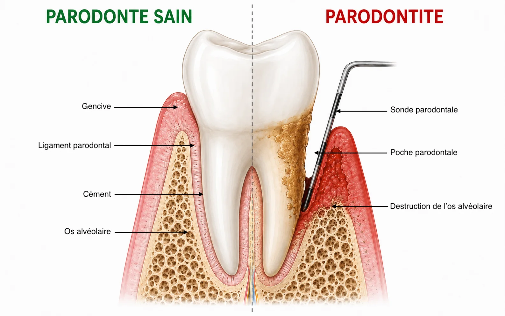

La parodontologie est la discipline dentaire consacrée à la prévention, au diagnostic et au traitement des maladies parodontales et des lésions parodontales, notamment les récessions parodontales.
Les tissus de soutien
La gencive
Tissu épithélial corné qui entoure les dents.
Le ligament parodontal
Tissu conjonctif fibreux (desmodonte) qui relie la dent à l’os alvéolaire.
Le cément
Tissu qui recouvre la racine des dents.
L’os alvéolaire
Os qui entoure et maintient la dent en place.

Les maladies parodontales
Réversible
Gingivite
Inflammation de la gencive liée à l’accumulation de plaque dentaire. Réversible avec un traitement adapté.
Chronique
Parodontite
Maladie inflammatoire chronique entraînant une destruction progressive des tissus de soutien.
Protocole de traitement
La prise en charge repose sur plusieurs étapes complémentaires, adaptées à chaque patient.
-
Perfectionnement de l’hygiène bucco-dentaire.
-
Contrôle des facteurs de risque — Tabac, diabète, stress, etc.
-
Assainissement parodontal — Détartrage et surfaçage radiculaire pour éliminer le biofilm et le tartre sous-gingival.
-
Chirurgie parodontale — Lorsque l’assainissement seul ne suffit pas — non systématique.
-
Maintenance parodontale — Contrôles réguliers pour stabiliser la situation et prévenir les récidives.
Questions fréquentes
- Quelle est la différence entre gingivite et parodontite ?
- La gingivite est une inflammation de la gencive, généralement réversible avec un traitement adapté. La parodontite est une maladie inflammatoire chronique qui détruit progressivement les tissus de soutien de la dent (gencive, ligament, os).
- Comment se déroule le traitement des maladies parodontales ?
- La prise en charge combine plusieurs étapes : perfectionnement de l’hygiène, contrôle des facteurs de risque (tabac, diabète, stress), assainissement parodontal, éventuellement une chirurgie, puis une maintenance régulière.
- Une parodontite peut-elle être guérie ?
- La parodontite est une maladie chronique. L’objectif du traitement est d’arrêter l’évolution, de stabiliser les tissus de soutien et de prévenir les récidives grâce à un suivi régulier.
- Le traitement parodontal est-il douloureux ?
- Les soins d’assainissement se font sous anesthésie locale si besoin. Une gêne passagère peut suivre les séances ; l’équipe adapte la prise en charge à chaque patient.
- Pourquoi un suivi après le traitement ?
- La maintenance parodontale permet de contrôler la stabilité des tissus, de prévenir les récidives et d’adapter l’hygiène au fil du temps. Sans suivi, le risque de réapparition de la maladie augmente.